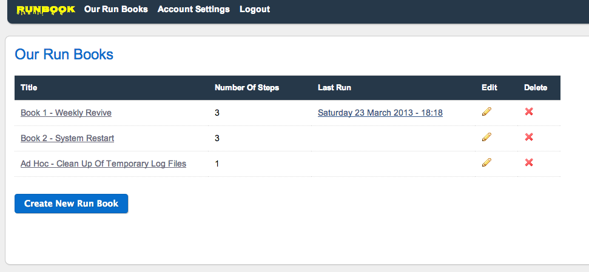
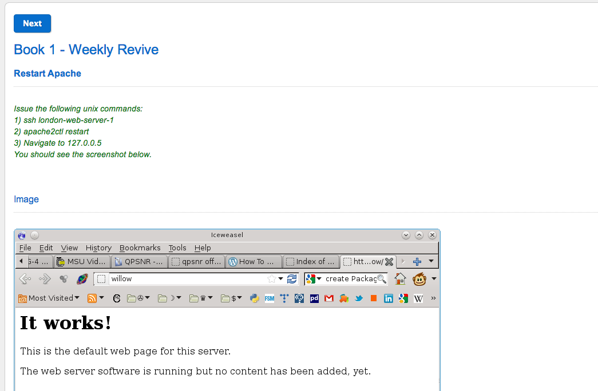

RunBook is a simple web application for documenting, managing, and executing operational Run Books.
It is aimed at system administrators and DevOps individuals and teams who perform manual routine tasks, helping them to do so more reliabily and with less scope for human error.
 What is a Run Book?
Wikipedia describes a RunBook in the following way:
A routine compilation of the procedures and operations which the administrator or operator of the system carries out. Runbooks are often used in information technology departments of commercial companies and NOCs as a reference for system administrators. Runbooks can be in either electronic or in physical book form.
Typically, a runbook will contain the procedures to begin, stop, and supervise the system. It can also contain descriptions for the handling of special requests and of contingencies. An effective runbook will allow other operators, with prerequisite expertise, to effectively manage and troubleshoot a system. Through runbook automation, these processes can be carried out using software tools in a predetermined manner.
Shouldn't this stuff be automated?
All DevOps love automation! Scripting and automating tasks around the deployment and management of your software is faster, more repeatable, more reliable, and less work than doing the same thing manually.
However, what about those tasks which, for whatever reason, you cannot automate? It is a rare and very lucky team that does not have at least some such manual repetitive tasks.
Perhaps this is because of a lack of automated testing, or the fact that that you use some vendor software without a management API, or perhaps you simply haven't had the time to script and harden some process adequetly.
Ultimately, wherever humans manage manual steps, therein lies the path to miscommunication, human error, key man dependencies and ultimately, production instability.
RunBook is currently in BETA
This is a very early prototype of the system. It is being released to the community in the hope that it will help people and attract contributors to the cause.
Getting Started
The application will later be made available as SAAS at runbookapp.com. It will however always remain free and open source for the community.
If you wish to be involved in the beta, you can download the application and get started using the following:
- git clone https://github.com/benjaminwootton/RunBook.git
- cd RunBook
- bundle
- rails s
The above makes the perhaps unfair assumption that you have a sane Rails environment installed.
Future Features
- Printable books
- Managing concurrent executions of books
- Troubleshooting features
- Validations